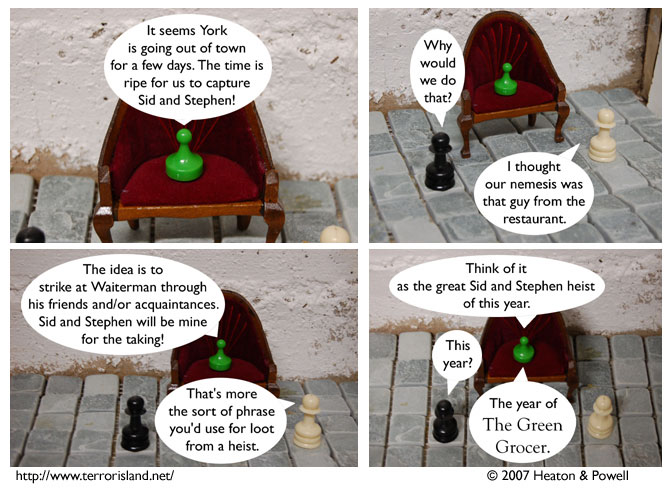

Strip #115
— Wednesday, March 6, 2007
How will Waiterman get out of this one?
Notes, Thoughts, &c.
Ben’s Notes
Do any Terror Island fans live in Washington, D.C.? I’m going to be there this weekend, so this could be a good chance for you to buy autographs from me in person.
Lewis’s Notes
I saw an excellent collection of plays last Monday night. It was called Bedtime Stories. I found out about it because my friend Kate was performing in it, but coincidentally, so was the Internet’s own Dave Kellett, husband of Gloria Calderon Kellett, the author of the plays. If you are in the LA area, I definitely recommend checking it out.